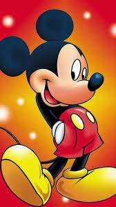

What is Tom and Jerry? Tom and Jerry is an American cartoon series about a hapless cat's never-ending pursuit of a
clever mouse. Tom is the scheming cat,
and Jerry is the spunky mouse. The series was
driven entirely by action and visual humour; the characters almost never spoke.08-Jun-2023
The first 'Tom and Jerry' cartoon was produced in 1941 called 'The Midnight Snack'. Another success,
Hanna and Barbera would continue to work on the series for another 15 years, creating 114 cartoons, 13 of which were
nominated for Oscars, with seven
winning for Best Short Subject.10-Feb-2023
Tom and Jerry is an American slapstick comedy animated short series and media franchise.
The original cartoons were created in 1940, written and directed by William Hanna and Joseph Barbera.
It is named after its two main iconic characters: a blue-grey cat named Tom and a brown house mouse named Jerry.

The actual story of Nobita was real story of a Japanese
boy who suffered from Schizophrenia disease. Schizophrenia
– A severe mental disorder which affects how a person thinks,
behaves and feels. This disorder makes a person that they were
not in real world which means they are living in an separate world.
Doraemon comes from the future, and is with Nobita's
great-great-grandson, Sewashi. He has a problem with heavy
debt caused by the bankruptcy of Nobita's company. Sewashi came
from the 22nd century to see Nobita to change the future, and he
brought Doraemon to look after him.

Walt Disney got the inspiration for Mickey Mouse
from a tame mouse at his desk at Laugh-O-Gram Studio
in Kansas City, Missouri. In 1925, Hugh Harman drew
some sketches of mice around a photograph of Walt Disney.
These inspired Ub Iwerks to create a new mouse character for Disney.
What is the moral of Mickey Mouse?
The Mickey Mouse Short Story for Kids
Even after being instructed by his mother,
Mickey Mouse didn't keep his toys in place. Mickey
was so busy playing with Minnie that he didn't listen
to his mother, and his uncle tumbled over his toy and fell.
Thus, the moral of the story is that we should always listen to
our elders and must obey them.

Ratan Tata, in full Ratan Naval Tata, (born December 28, 1937, Bombay [now Mumbai], India), Indian businessman who
became chairman (1991–2012 and 2016–17) of the Tata Group, a Mumbai-based conglomerate.
A member of a prominent family of Indian industrialists and philanthropists (see Tata family), he was educated at
Cornell University, Ithaca, New York, where he earned a B.S. (1962) in architecture before returning to work in India.
He gained experience in a number of Tata Group businesses and was named director in charge (1971) of one of them, the
National Radio and Electronics Co. He became chairman of Tata Industries a decade later and in 1991 succeeded his uncle,
J.R.D. Tata, as chairman of the Tata Group.
Upon assuming leadership of the conglomerate, Tata aggressively sought to expand it, and increasingly he focused on
globalizing its businesses. In 2000 the group acquired London-based Tetley Tea for $431.3 million, and in 2004 it
purchased the truck-manufacturing operations of South Korea’s Daewoo Motors for $102 million. In 2007 Tata Steel
completed the biggest corporate takeover by an Indian company when it acquired the giant Anglo-Dutch steel manufacturer
Corus Group for $11.3 billion.
In 2008 Tata oversaw Tata Motors’ purchase of the elite British car brands Jaguar and Land Rover from the Ford Motor
Company. The $2.3 billion deal marked the largest-ever acquisition by an Indian automotive firm. The following year the
company launched the Tata Nano, a tiny rear-engined, pod-shaped vehicle with a starting price of approximately 100,000
Indian rupees, or about $2,000. Although only slightly mor